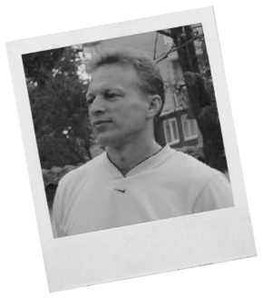

Цель:
Выбирая новое место работы, немаловажную роль уделяю возможности личного и карьерного роста.
Хотел бы получить должность, которая бы соответствовала моим возможностям, способностям и опыту.
Резюме:
За время работи проявил себя как старательный, ответственный работник. Аналитическое мышление,
быстрая обучаемость. Постоянно усовершенствую свои познания в работе, стремление к профессиональному росту,
высокий уровень ответственности и дисциплины. Уравновешенный, дружелюбный, легко нахожу общий язык с коллегами
и партнерами, избегаю конфликтов. Всегда стараюсь найти оптимальное, конструктивное решение во время
рассмотрения какой-либо проблемы или вариантов выхода из сложной ситуации.
- Личные данные
-
Дата роджения: 05.08.1973
Возраст: 44 года
Место роджения: г.Сумы, Украина
Адрес: г.Сумы, ул. И.Сирка, д.37, кв.127
Семейное положение: женат, двое детей
- Образование
-
Среднее специальное
- 1988-1992
Сумской Машиностроительный Техникум.
- 1980-1988
ООШ №26 1-2-х ступеней
- Опыт работы
-
- 2011-2018
ООО «Софилайт», специалист по обработке заказов.
Обработка заказов, просчет и подбор материалов и оборудования по требованиям клиента,
в области: светотехники, электротехнических изделий, кабельно-проводниковой продукции,
низковольтного оборудования, источников света и сопутствующих материалов.
Работа с поставщиками, клиентами, логистика.
- 2009-2010
ЧП «Камаев С.А.», менеджер. Работа с клиентами, поставщиками, складской учет.
Обработка, оформление и подготовка первичных, бухгалтерских документов, работа с клиент-банком.
- 1999-2008
ЧП «Прайд», менеджер. Отдел логистики. Работа с клиентами, поставщиками. Координирование работы склада,
торговых представителей, операторов, складской учет. Обработка, оформление и подготовка документов,
работа с клиент-банком.
- 1993–1999
ЗАТ «Сумикамволь». Слесарь-ремонтник 4 разряда.
- 1992-1993
СМНПО им.”М.В.Фрунзе”. Токарь 3 разряда.
- Навыки работы с компьютером и оргтехникой
- Опытный пользователь ПК: Windows, MS Office, Outlook Express, 1С(7, 8 версии), Oracle, Интернет-браузеры,
Клиент Банк и другие программы, установка и настройка периферийного оборудования. Владение на высоком уровне.
- Владение языками
- Русский – родной язык.
Украинский – в совершенстве.
- Личные качества и интересы
- С 2011 г. являюсь автовладельцем, имею права категории «В» от 2009 года.
Веду здоровый образ жизни, периодически посещаю тренажерный зал, бассейн. Вредные привычки отсутствуют.